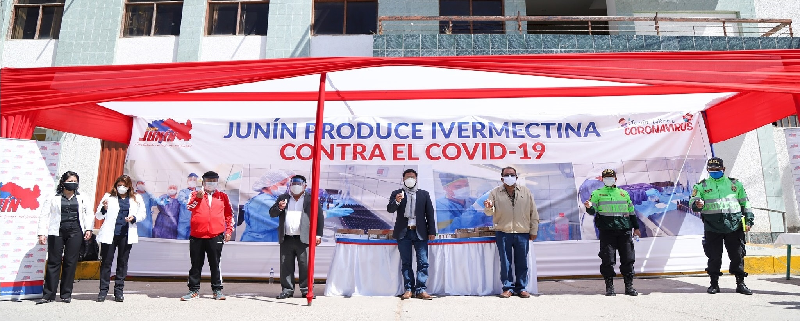
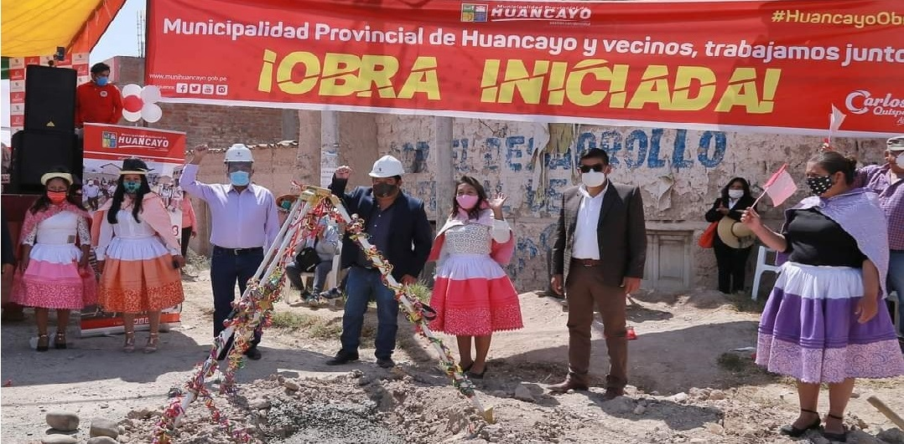

Municipalidad de Sicaya Te Cuida y Te Protege
La gestión regional de Junín cumplió con su compromiso, fuimos el primer distrito que firmó convenio institucional para la dotación de este medicamentos, ahora nos hicieron realidad la entrega de Ivermectina, lo cual sera distribuida adecuadamente a nuestra población de acuerdo a un informe médico.
